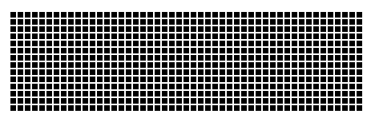

네모난 검은 사각형의 갯수를 세는 겁니다. 모두 세는게 아니라 '가로줄' 만 셉니다.
정확한 결과를 위해 아래 네 가지 사항만 지켜주세요.
1. 손가락이나 마우스 포인터를 짚어서 세지 말고 '눈'으로만 세야 합니다. (확대도 안됨)
2. 세는 시간을 초단위로 측정해주세요.
3. 포기했더라도 일단 시도를 했다면 측정 결과는 반드시 리플로 적어주세요.
4. 다른 사람의 결과를 미리 보지 마세요. 측정 후에 확인해주세요.
리플 적는 요령입니다.
성공시> 세는데 걸린 시간과 자신만의 세는 방법을 적음
: 시간(초), 갯수(개), 갯수를 세는 방법/요령, 세면서 생긴 정신적, 신체적 반응
실패시> 대략적으로 포기하는데 까지 걸린 시간과 포기 이유를 적음
: 시간(분), 포기, 포기한 이유
예시1> xx초, oo개, 그냥 순서대로, 눈이 아프고 어지러움/구토/망연자실/살인충동
예시2> 약2분, 포기, 헛것이 보임/눈을 깜빡였더니 도로 제자리/짜증남
---------------------------------------------------------------------------------------
이 아래쪽은 측정 후에 읽으시는게 좋습니다.
현재 10명을 상대로 측정한 결과 입니다.
정확하게 대답: 3명, 25~31초
근사치로 대답(오차 3개 이하): 1명, 15초
큰 차이로 대답(오차 4개 이상): 2명, 11~34초
포기: 4명, 1~3분
이 실험으로 무엇을 알 수 있을까요?